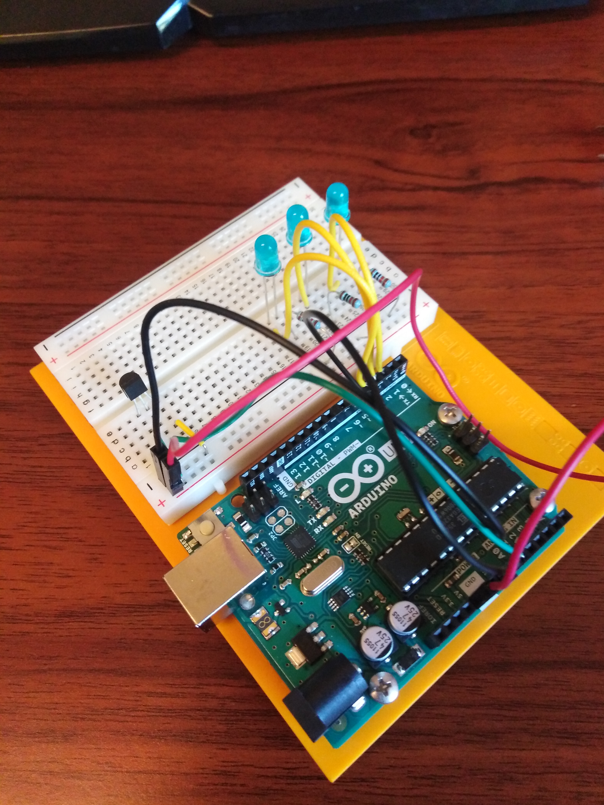
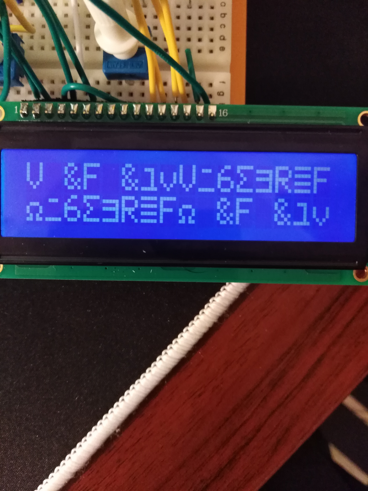
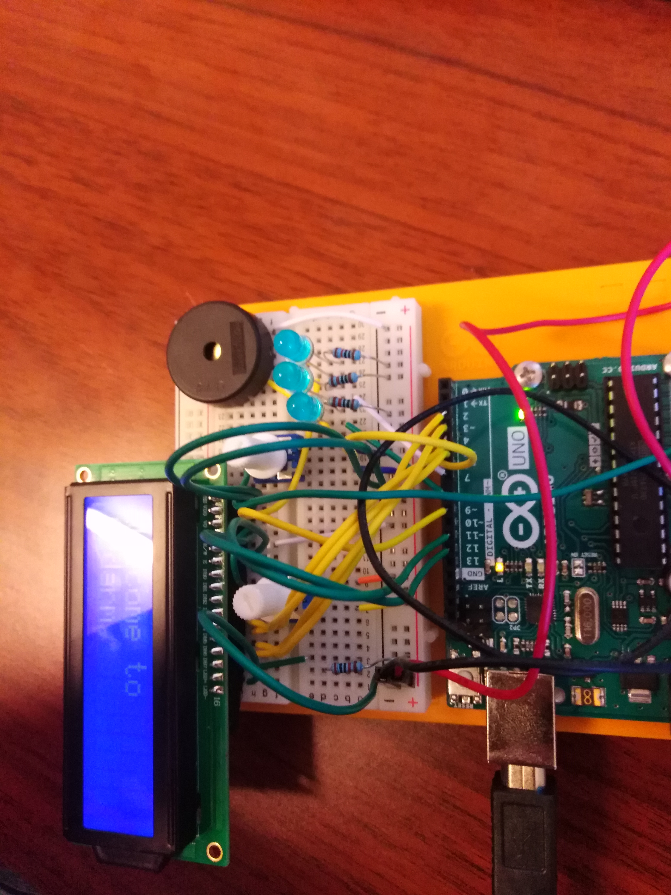
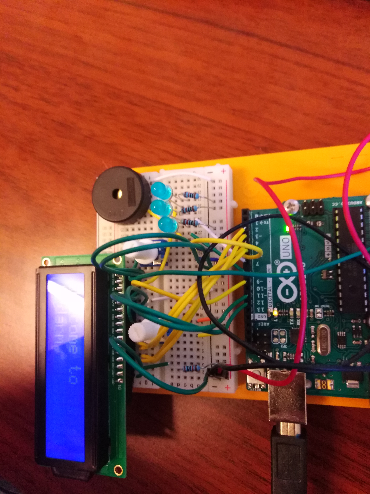

A digital timer
Ardarm the Arduino alarm
Ardarm is an alarm made with an Arduino. The alarm is set and turned of with a potentiometer. The time is displayed in a liquid crystal display, and when the alarm goes of 3 LEDs will blink while a piezo plays an alarm noice. The alarm can be set with a maximum of 60 min.
How to make
Potentiometer
First I set up a potentiometer which i can read from. I pluck it in the breadboard and connect the power and ground pins. Then took a longer pin and connect to the A0 port, which i can do analogRead from. In my code I would then set up for the analog read from the potentiometer. From this analogRead I would map the number into seconds from 0-3600 seconds. This is done with the map function which scales numbers.
In order to change the timer i sat up a variable for holding the last analogRead value. When ever this changes over with an interval over 5, the timer gets a new value. If statements are also set up to turn of the alarm when the analogRead gives a value of 0. Values described over also control what is to be displayed on the LCD.
LCD
I won't go in detail how the LCD is set up, you can see in the Arduino book how to set this up.
I will explain the code for what is displayed on the LCD. 3 things can be displayed on screen: the welcome screen, the timer screen, and the alarm screen went of. When the analogRead reads 0. The screen will display the welcome screen. When the analog read is not 0. A timer will be calculated and a count down will start. The screen will then display the time to go. When this timer becomes 0, the timer goes of, the display will say the ardarm went of.
Piezo
This is the component making the sound when the alarm goes of. For each iteration of the main loop, it will play a sound. This component is connected from port 6 to the piezo, to the ground in the breadboard. The sound is made with the function tone, which plays a sound upon activating. When potentiometer turns of the alarm the sound will also stop.
LEDS
All of these are conected independently from port 7, 8, 9 to each of the LEDs, and then to the ground with 220 ohms resistors. When alarm goes of the LEDs will blink and when the alarm is turned of with the potentiometer, they will stop blinking.
GitHub, videos and images.
Click here to find the code for this project GITHUB ARDARM
Check out some of the images and videos below of the project!
  

Came across some weird bug with the LCD where it would just display gibberish. But happened rarely and didn't put much into it.